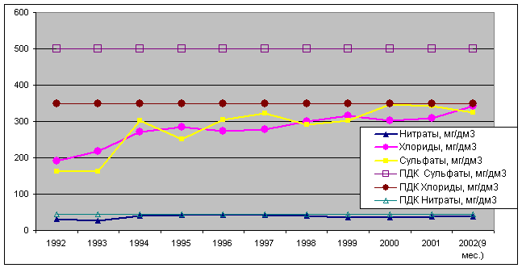
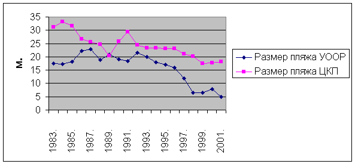
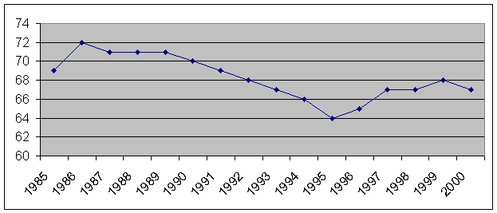
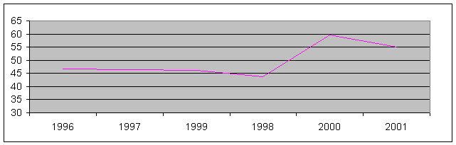

PUBLIC ORGANIZATION in Evpatoria, Crimea
"L.E.A.P" - Local Ecology Action Plan
| PUBLIC ORGANIZATION in Evpatoria, Crimea "L.E.A.P" - Local Ecology Action Plan |
| ќѕ»—јЌ»≈ ќ –”∆јёў≈… —–≈ƒџ √. ≈¬ѕј“ќ–»я, 2003
|
PUBLIC ORGANIZATION LOCAL ECOLOGICAL ACTION PLAN t. 8-06569-20288, e-mail: leap@seavenue.net DESCRIPTION SURROUNDING AMBIENCES G. EVPATORIYA 2003 Introduction Evpatoriya is located in south Ц west part steepe Kryma on seaside Evpatoriyskoy bays shallow Kalamitskogo bay Black epidemic deathes. The City spreads on 24 km along seaside, where aptly match the elements sea and steepe climate. The Main natural and medical factor of the resort are an сульфидные dirt Sakskogo lake, medical рапа Moynakskogo lake, as well as seaside-steepe climate and sandy beaches, as has defined importance Evpatorii, as climatic and бальнеологического of the resort. The Territory Evpatorii on рекреационным resource has an index кадастровой estimations - 955,7 that is to say nearly as much as, in how much are evaluated рекреационные facility whole Kryma. The Coast band on length more than 50 km is covered powerful слоем the fine sand. The Width her(its) varies from several metres before 70 m in south-west part of city. The Seabed covered small бархатистым sand, is lowered before depth epidemic deathes before 5 m, with gradient 0,015 Ц 0,025. In vicinity Evpatorii is located row salty lake-estuary, on day which lies the layer an иловой dirt. The Most popularity uses the lake Moynaki, medical рапа, which contains more than 50 г/л different salts. The Main почвообразующими sort in Evpatoriyskoy zone are an понтийские, меотийские and сарматские limestones. Topsoil ed in condition arid steepe причерноморского climate under ковыльноЦтипчаковой, полыноЦзлаковой, луговоЦстепной by vegetation. At present on given territory dominates cultural vegetation. 1. Condition грунтовых water (the level and nature of the contamination грунтовых water, the sources of the contamination, spare of drinking water, quality of drinking water). The Sources of the water-supply g. Evpatorii Ц underground. Vodonosnye horizons: Sarmatskiy and Tortonskiy. The Spare of drinking water: The Normative accounting water consumption for city Evpatorii and his(its) village forms 128 thous.. m3/day. The Working supplieses of underground water on all source of the water-supply g. Evpatorii and village form 101,1 thous.. m3/day, but use the водоносные horizons with such intensity is forbidden, since sharply increases минерализаци€ drinking water. The Dayly quota of the water supply point of underground water 89,9 thous.. m3/day is determined by permit on спецводопользование. The Deficit forms 38 thous.. m3/day, but at period of the resort season he vastly increases to account unorganized reposing. Water is given consumer with pump plant 2 ascents in following mode:
The Quality of drinking water was submitted for rice. 1 and in exhibit 1.  the rice. 1. The Track record some index of goodness drinking water of the water supply point CHebotarka. Increasing минерализации within CHebotarskogo water supply point is explained two reasons: 1. Podtyagivanie sub-standard salty water on layer, since above on flow in northwest direction from water supply point develop water with минерализацией more than 3,0 g/dm3; 2. Peretok высокоминерализованных water from вышележащих водоносных horizon. Mineralizaciya underground water pont-мэотических of the postponing forms 1,8 g/dm3 and exist the hydrodynamic premiseses for перетока overhand, since piestic level водоносного horizon pont-мэотических of the postponing is fixed on mark on 2,0 Ц 4,5 m. above, than in working horizon. At present exists increasing a water table, which in the manner of spring are filtered in oz. Moynaki and Sasyk-Sivash. The Main reason of increasing water table Ц arrival from two branches North-Crimean channel. Water is filtered from channel as a result of their destructions and under polyve, the whole for under study pont-миотис-сарматского of the complex Ц 320 tys.m3 in day i.e. nearly as much as as enters in water-bearing horizon from natural areas of the power supply. As a result level of underground water in степном Krymu increased on supporting hydrological bore hole on two, four and six metres. Calculate, when and on how much can increase the water table on territory of the city without observation holes not possible. The Process of increasing level lasts and becomes in the last 4 intensive. The Source of the contamination грунтовых water are absorbing pit of the sanitariums ЂChangeї, ЂEvpatoriyaї, Ђhim. T.G. SHevchenkoї and ЂSparkї , where is thrown послепроцедурна€ water and water from pool. Source of information: Evpatoriyskiy PPVKH KP ЂYUzhekogeocentrї DP GGRES
2. The Condition of surrface water (the description to hydrological network, feature of the sewer, level водообмена, level of the contamination of water in stream Ц list material and quantitative given on each object, the sources of the contamination Ц name, nature and volume material-загр€знителей). The General information about surrface pond of the resort Evpatoriya. The Resort Evpatoriya is located on seaside Black epidemic deathes. Medical mineral lake ЂMoynakiї and estuaries lake Sasyk-Sivash are located On territory of the resort.
The Gaugings level Black epidemic deathes are produced Evpatoriyskoy meteorological station, located in морпорту. For the last 31 среднегодовой level changed from 471 before 491 refer to. in Baltic coordinate system. Amongst multiple sources of the contamination of sea water follows to consider the sewers: but) deep-water issue from town sewage buildings, extent 1,2 km, not providing stand;bear sewer far seaborne (installed factors on BPK Ц 8,7 mg/dm3, weighted belongings-to you Ц 9,9 mg/dm3; the actual factors on BPK5 Ц 8,7 mg/dm3, weighted belongings-to you Ц 15,0 mg/dm3, phosphate Ц 6,8, nitrite Ц 45,2; the sulphate Ц 361; the chloride Ц 660); b) issues sewages (4) from pool and гр€зелечебниц sanitariums, extent before 300 m that brings about accumulation of the different contamination in coast zone. The Sewage system g. Evpatorii. The Pool канализовани€ main part of city is concentrated on main KNS, with which sewers are given on Moynakskuyu KNS. With Moynakskoy KNS sewages are swapped on SCYTHES. Their design capacity Ц 63,0 thous.. m3/day. The Year comissioning Ц 1975. The Last reconstruction in 1999. The Installed factors on: BPK Ц 8,7 mg/dm3; the weighted belongings-to you Ц 9,9 mg/dm3. The Actual factors on: BPK5 Ц 8,7 mg/dm3; the weighted belongings-to you Ц 15,0 mg/dm3. The Phosphates Ц 6,8, nitrite Ц 45,2; the sulphate Ц 361; the хлдоридам Ц 660. The Deep-water issue of the cleaned sewages in Black sea D=1220 mm, extent 1460 m. The Whole in Evpatorii 12 sewage pump plants. In city Ц 138,3 km sewage networks, including:
The Sewage очистные of the building Ц 2 complexes: THE SCYTHES g. Evpatorii. The Sewers enter on SCYTHES on pressure collector from Moynakskoy KNS. The Other sources of the contamination Black epidemic deathes: increasing migration sea court, which quite often become the source of the contamination to areas of water by home rubbish and sometimes ль€льными water, as well as absence of the united system ливневой to sewerages with clear sewer. Exists 7 points of the issue unrefined ливневых sewer in resort area seaborne and 3 in estuaries oz. SASYK-Sivash (exhibit 6) Moynakskoe lake The Lake is located on west fringe g. Evpatoriya, is extended southwesterly on northeast, is wrought from Black epidemic deathes sandy пересыпью. In north part lake is prepared by bulk dam, having width before 3 m, on technical and medical part. Earlier medical and technical part were an united перетоком, since 1999 this two separate ponds. The Most length lake beside 2 km., width from 850 before 900 m. The Length to coast line lake order 6,0 km., area of the water mirror 1,8 km2, maximum depth 0,9-1,1 m., area of the catchment basin 36 km2. The Lake is an устьевой by part Moynakskoy beems. The пластовые output underground water exists On побережью lake and springs. The most north extremity lake at present is a technological part DP ЂGryazelechebnica ЂMoynakiї, here located pools to regenerations medical dirt гр€зелечебницы, in this part is realized unset послепроцедурных water with гр€зелечебницы. The Composition рапы lake ЂMoynakiї хлоридный sodium-vapor. Srednegodovaya минерализаци€ рапы in 2001. has formed 55 г/л. In contrast with 1971. decreased nearly in two times, in 1947 in рапе was kept 180 grams of the salts on litre of the solution. The Main reason распреснени€ lake Moynaki Ц this change the general hydrogeological situation under influence of the work North-Crimean channel.
The Lake ЂMoynakiї - is located in west part g. Evpatorii E = 1,8 km2, E= mirror 1,65 km2 the tolite. глуб = 0,9 m. Necessary: бальнеологическое study lake
In 2002 was organized analysis of drinking water, taken from under
tap in 7 points of the city учащимис€ and teacher COSH є12 (refer to.
the indicator panel.). The Analysis is organized in chemist-analytical
laboratory of the crimean branch of the Institute of the hydrotechnics
and land reclamations to Ukrainian academy of the agrarian sciences
(g. Simferopoli, tel. 22-53-08). The Results of the analysis of water g. Evpatoriya
The Network of the water-supply. On balance PPVKH consists 382,1 km water networks of the city Evpatorii, пгт Peace and Novoozernyy, including:
The Sources to information: Evpatoriyskiy PPVKH Town SES The Institute to land reclamations and water resource g. Simferopoli. Governing the economy Evpatoriyskogo горсовета
4. Ground and their condition (the description of ground, list material-загр€знителей, quantitative feature, the sources of the contamination Ц name, volume and nature of the contamination). The Main почвообразующими sort in Evpatoriyskoy zone are an понтийские, меотийские and сарматские limestones. Topsoil ed in condition arid steepe причерноморского climate under ковыльноЦтипчаковой, полыноЦзлаковой, луговоЦстепной by vegetation. At present on given territory dominates cultural vegetation. Raschlenennosti relief of the territory provides the sufficient natural drainage, in connection with than ground of the resort region suitable to irrigation. However, considering heavy mechanical composition and засоленность плиоценовых of the clays, at irrigation can be formed верховодка, in this connection possible заболачивание or secondary засоление. Necessary checking for water table. Ground of the city feel significant антропогенную load. The System peelings ground from economic-home rubbish distant from perfection, for want of facilities it is not enough container, many platforms not comfortable and not ограждены, it is not enough number caretaker (from 210 summer before 150 in off-season, instead of required 1000 staff units, as was in 80-e gg). Particularly sharply cost(stand)s the problem of the purity of the beaches. At year term антропогенна€ load on beaches increases on several orders. With such sharp swing загр€зненности territory, public belongings do not manage. For want of financing are not stood from 1-2 zones guard resort row enterprise and economic courtyards, in old part of city are absent the town sewage networks, inhabitants use the выгребами. Remains the complex situation with salvaging industrial departure люминисцентных and ртутьсодержащих lamps, autobuses, battery and гальваношламов (the plant ЂPennantї, OMZ, autoworkshops). As of West-Crimean regional госэкоинспекции, only in Evpatorii in 2001 was вывезено on scramble and were subjected to destruction by by incinerations and захоронени€ 192,7 thous.. m3 TBO moreover big their share accounts for months of the resort season since May on September (beside 30 thous.. m3 at month). Solely negative influence upon ecological situation in Evpatorii (particularly at period of the year resort season) renders the absence corresponding to powers for maintenance up-to-the-mark sanitary condition of the territory of the city. In city on condition on 01.11.2002. numbers 121 containerized platforms, container 598 (628 as of KP Ekovtorma), including on platform Ц 428, in 9-ti этажных house with garbage chute Ц 170. On rate with provision for daylight-savings time necessary 1029 containers that forms 61% укомплектованности. Practically with begin 2002 is installed in addition 148 ed., including 15 with lid on wheel. The Repaired fences containerized platform Ц 9, обустроено new Ц3 (str.Timiryazea, garden Kommunarov, str. 60 years October 18). The Necessary repair and development else on 23 platforms with installation 126 containers (refer to. the indicator panel. 1) The Indicator panel. 1.
At year term because of lack container and technology at an incorrect time вывозитс€ the rubbish in spite of the fact that necessary to clean the containerized platforms a minimum twice a day. As a result Ц dirt, flies, stench, antisanitation. On sanitary clearing the city on collection TBO works спецтехника, including:
Ground park, garden, streets feel contamination as a result выгула home animal in непредназначенных places. The Decision to sessions of the city council є328 from 30.12.1999 ЂAbout measure on sequencing the contents home animalї are determined following territory for выгула:
All enterprises g. Evpatorii, whenever possible formation токсических industrial departure, are found on checking гор—Ё—: APKP ЂPennantї, OA ЂExperienced-mechanical plantї, GP ЂEvpatoriyskiy aircraft repair plantї. All токсические waste possible conditionally to divide into 2 groups: waste гальванообработки details, flourescent lights. For neutralization of the sewages from galvanic area Experienced-mechanical plant was equiped with underground stone железобетонный reservoir-neutralizing agent. The Cleaned sewages were thrown in town sewerage under checking the departmental laboratory PPVKH. At present area is taked to pieces and sewer has not. Dug earlier dry remainder is in pressuretight capacity and is kept on concreted a platform of the territory. The Waste гальваники plant ЂPennantї enter on результатным system (acid and alkaline) in 2 накопительных of the reservoir. From drives consecutively Ц in neutralizing agent, in vertical mud boxes then. The Cleaned sewages are thrown in town sewerage under checking the departmental laboratory PPVKH. The Dry remainder is thrown in bunker, whence on measure of need вывозитс€ in спецхранилище (12 накопительных of the capacities on 50 m each). Considering that volume of production sharply grew shorter, amount enterring токсических промотходов vastly decreased. Processed mercury lamps medicine to be taken externally illuminations enter on enterprise ЂGorsvetї, where is kept in specially conducted place in original packaging. For salvaging the lamp is organized вывоз€тс€ in g. Gorlovka Doneckoy area. On 2001. accomodation is allowed on enterprise:
5. The Condition of the air (the level of the town region contamination, list material-загр€знителей, the sources of the contamination Ц name, nature and volume surge). A surges bad material had For 2001 34 enterprises of the city in atmosphere, this on 21,4 % more, than in 2000. Also this 7,2 % from enterprise, having surges on Autonomous Republic Cream. The Amount of the sources surge at the average on one enterprise in 2001 has formed 9 units. The Amounts surge bad material on g. Evpatorii in 2001году increased in contrast with 2000 on 31,043 tons, growing has formed 10,1 %. Is it At the average thrown away one enterprise 9,990 tons. The Volume surge bad material in payment on 1 km2 territory increased on 10,1 % in contrast with 2000. On ARCHES similar factor in contrast with 2000 decreased on 2,5 %. Increase the volumes surge polluting material in atmosphere has occurred because of increase amount enterprise. The Amounts surge specific polluting material, enterring in atmosphere, form 133,277 tons that on 7,865 tons less, than in 2000 (the reduction has formed 5,6 %). The Specific gravity these surge has formed 1,3 % from all similar bad material enterring in atmosphere on the whole Krymu (in 2000 this 1,4 %). At the average one enterprise volume surge specific polluting material has formed 4,052 tons (in 2000 Ц 5,446 tons). In general volume surge bad material in atmosphere in 2001 33,6 % have formed the nitric oxide (31,9 % in 2000). The Nitric oxide are formed at incineration all type fuel (the gas, fuel oil, solid fuel). Clearing the products of combustion from nitric oxide technically complex and in most cases economic unprofitable, but formation these bad material possible vastly to reduce. On enterprise, having boiler installation, choice of the height and diameter of the smokestack produce from conditions of the necessary diffusing in atmosphere bad material. Except this, for combustion efficiency fuel by by regulations of the correlation Ђgas (the fuel)- air is conducted adjustment of the combustion caldrons. On the grounds of what is formed режимна€ card. Work on which provides the minimum concentration bad material in leaving gas. In 2001 is examined motor transport 14 enterprises (the garages enterprise Minzdrava, Minoborony, Mintransa, Gosvodhoza and санаторно-resort institutions) Ц 269 cars, on transport pathway is examined 108 machines. On revealled breaches госэкоинспекцией is fined 45 persons. Laboratory checking for level of the soiling the free air is realized on stationary point (гор—Ё—). The Check account of the maximum transport load is conducted in watch Ђpeakї on enroute point of the checking. The Maximum transport load in 2001 is noted at March Ц 492. In 2001 explored 588 tests of the free air, of them with deflections Ц 11 (1,87%). In 2000 these factors have formed accordingly 664 tests, 15 Ц with deflections (2,8 %). Srednesutochnye concentrations ingredient Ц below PDK (refer to. the indicator panel. 1, 2 and exhibit 2). Table 1
Table 2
The Sources to information: Town SES Governing the economy Evpatoriyskogo горсовета Governing the statistics Evpatoriyskogo горсовета 6. The Climatic conditions (the wind direction, rainfall, the temperature and etc.) Specifics of our resort in multim is defined by climate, for which characteristic of abudance sun and heats. The Climate Evpatorii more favourable, seaside-steepe, sparingly-humid. The Located city in west part of Crimean peninsula, on valance coast Evpatoriyskoy bays, in north part Kalamitskogo bay Black epidemic deathes. The Geographical координаты: north width 450 12Т, east longitude 330 22Т. The Even surface of the steppes, which adjoin to city with north and northeast, gradually leaves under water so even on significant distance from coast sea very small. In climate Evpatorii influence epidemic deathes matches своеобразно and adjoining to him extensive steepe space. The Sea, being enormous reservoir of the heat, reduces the day allowance and annual variations of the temperature of the air, as well as shortens the cool period of the year. At cool time of the year it raises the temperature of the air, in warm Ц reduces. The block of the solar heat gets On the strength of its south geographical position Evpatoriya. For year 122,2 kkal/sm2. Srednegodovaya temperature of the air 11,5∞. The Average temperature of the winter 1,2∞, summer - 22,5∞. The most hot month is a July with average temperature 23,5∞. The most cool Ц January, среднемес€чна€ temperature + 0,1∞. Summer in Evpatorii very warm and arid. The Not infrequent hot days, when maximum temperature can get to 40∞. The Winter soft, average length безморозного period 205 days. But sometimes, at invasion of the arctic air, exists sharp drop of the air (the absolute minimum Ц24,4∞— was registered January 12 1950). The Snow cover, is characterized by big vagary. The Autumn, in the first her(its) half, dominates dry and warm weather, in the second Ц humid and chilly, because of increase the frequency of the passing средиземноморских cyclone. Characterizing termal mode Evpatorii, follows to note more later approach both winters, and springtimes. The Autumn, as a rule, теплее of the springtime that is explained by influence epidemic deathes. The Important particularity of the climate Evpatorii is an abudance of the solar days, before 280 at year and length of the solar glow 2460 hours that forms 58 % possible for year. The most solar Ц July and August. Evpatoriyskoe seaside for winds of all directions openly. In winter, autumn, as well as springtime dominate the northeasterly winds, but summer, especially daytime Ц south-west sea breezes. Thereby, dominating winds in current of the year in Evpatorii are northeasterly. Summer breezes bring the masses of the net air, saturated component element of sea water. The Coming flows of the air create natural ингал€торий, which renders the benefical influence upon organism of the person. The Average annual speed of wind 5 м/с. The Autumn and in winter be the strong winds, blasts reach 24-28 м/с. The Air pressure, which pertains to count;calculate;list main climatic factors directly acting upon organism of the person, comparatively stable on length of the whole year. The Average annual value of the atmospheric pressure 762 mms. rt. the pole that corresponds to normal. At cool period of the year, at passing of the frontal sections, are noted sharp oscillation of the free air, which negativly tell on condition метеолабильных sick. Evpatoriya poor precipitation(draft), their amount for year forms whole 375,4 mms. Be certainly and exceptions such as 1997, when precipitation has fallen out 760,2 mms. In winter precipitation more (112,1 mms), least of all springtime (75,3 mms). In spite of small quantity of the precipitation, the air in Evpatorii does not can be too dry because of vicinity epidemic deathes. The Average value to relative moisture for year 76%. The Most average moisture exists in winter 84 %, the most low summer Ц 67 %. The Average temperature of the wearing carpet of the water seaborne 13,1∞. Most powerfully water is coolled at the end of the winter before 2∞—. Summer sun enough quickly warms up the shallow bay and the temperature reaches 25∞, but at separate years 27∞. At years, when exist the сгонные phenomenas, the temperature of the water beside coast during several hours or day can be sharply lowered. Herewith occurs full change of water: surrface warm, polluted water are hijacked in open sea, but on their place ashore leave cool, чистые deep water. After completion сгона, at presence of the firm solar weather, the temperature of the water seaborne quickly increases. Sand on евпаторийских beach by summer warms up before 50∞. This allows to use the sand baths of the solar heating for treatment sick. Thereby, climatic conditions Evpatorii unique that allows to use them for recovery and rest. The Sources to information: Governing the economy Evpatoriyskogo горсовета Governing the statistics Evpatoriyskogo горсовета BioClimatic station 7. Noise and electromagnetic abuse of the environment (the source, feature). Radiacionnyy background varies within 3-12 microx-rays at hour i.e. vastly below possible. The Zones экстенсивной рекреации (the calm rest) in Evpatorii not обустроены it is not enough. The Great degree of the sound litterring space. The Sources to information: Governing the economy Evpatoriyskogo горсовета
8. The Rubbish (the amount and accomodation authorized and unauthorized scrambles acting and closed, volume and composition of the rubbish, which gets on scramble). The Export fluid departure is produced on owerflow station of the city. The Owerflow station размещена in industrial estate, is built on coordinated in accordance with the established order project, is connected town sewage network. The heavy repair was Conducted in 1996. At present, the station corresponds to sanitary and природоохранным to requirements and capable to take the fluid waste within rated capacity. Hard home and nontoxic building waste вывоз€тс€ on town firing range. The Firing range размещен on 12 kilometers Razdolinenskogo freeway. Occupies the area 28 ga, of them 15,5 ga occupied under захоронение hard home departure. The Remoteness from vein quarter Ц 15 km. The Year begin usages Ц 1974г. The Firing range паспортизирован since 1973 with annual extension and revision data. The Whole on firing range works: but) bulldozer Ц 1 ed. Ц machine operator 4 More Negative influence on ecological situation, so named, unauthorized scrambles of the rubbish (basically building and cost estimate). To such object possible to refer: o scramble building departure in р-не LDC ЂPhysicians Chernobylї пос.
Zaozernoe; the building waste (the macadam, soil, concrete, wreckage stone and block etc.) Ц 3,1%; Ц TBO from population and enterprise Ц 55,2% Ц on 10-12% from paper and paperboard (of them be utilized beside 60%);
The Sources to information: KP ЂEkovtormaї
9. Map of the City. 10. The Natural facility: the green plantings (the parks, wood and etc.); The Significant influence upon vegetable world of the city renders presence of the large number salty lake. The band солероса european is situated Upon their seaside. This type can carry the most high concentrations of the salts. On measure of the removing from water mirror, to солеросу begin be mixed сардасан knobby, reduce;cramp простерта€, plantain seaside and тонкоцветковый. Then follows the band extremely discharged to vegetation, the main role in shaping which play mainly куртины сареазана and галимионе, being situated friend from friend on distance 1-2 metres. On sandy sea seaside sprout: колосн€к sandy, синеголовник sea, sedge колхидна€, астрогал varied, коров€к перистораздельный. The Level of the planting of trees and shrubs of the city it is enough высок. All plantings of the total use 820 ga occupy on territory of the city. This parks, gardens, gardens, boulevards, набережные of town importance Ц 242 ga, resort Ц 578 ga. They are a revenge of the everyday rest for inhabitants and reposing. Nearly all streets are planted trees and shrubs Ц 230 ga, there are внутриквартальные of the planting in region of the dwelling building Ц 250 ga. Are they Vastly planted trees and shrubs территурии institutions of the rest Ц 110 ga. The Planting of trees and shrubs there is on area of the institutions, organization, schools, kindergartens, hospitals, промпредпри€тий Ц 158 ga. Besides, on territory of the city there are sanitary-defensive plantings between vein region and промрайонами, separate enterprise, along railway The Whole on balance Evpatoriyskogo Gosleshoza numerical 579,4 ga timber facilities, 488,4 ga wood and 326,4 ga полезащитной лесополосы. The significant reduction of the timber defensive bands exists For the last 10 years. The Strict account on given problem not to lead, however in the opinion of serving гослесхоза loss can reach 30% as a result unauthorized вырубок, diligences tree. Annual need for shaping лесополос 30 ga. The Whole on Sakskomu region necessary to debark 210 ga. The Aspectual composition лесополос: Gledichiya, Bitter almond, Acacia, Maple, Greckiy nut, Loh silvery, Pine. Annually necessary досаживать beside 20-30 ga in гослесфонд The Fruit plantings facilities Ц 3 ga, Greater area of the collective farms occupy the significant area (21 ga in 80-h gg, presently else more). The Gross amount of the green plantings in border of the building of the city, in payment on one inhabitant forms 218 m2. All existing green plantings beside 2278 ga form on territory of the city. Follows to note that all brought given on planting of trees and shrubs of the city carry it is enough aproximate nature. As from begin 90-h gg past of the century and unauthorized вырубки last on our days, tree is perished from diseases and old age. Long ago on was conducted inventory of the green plantings, but signifies the possible detours from shown numerals. In 2001. высажено trees Ц 5265 sht, shrubbery Ц 15580, is sowed;sown lawn Ц 7000м2. The Vegetable cover and aspectual composition of the green plantings of the coast part общегородского centre (the Park Frunze, Dendrologicheskiy park, Quay to him. Bitter, garden to him. Kirova, garden to him. The Goldeneye, town garden) present enormous value for city-resort Evpatorii since natural-climatic conditions for given region Kryma more severe and unbeseeming for planting of trees and shrubs, but выращивание unique and rare type tree and conservation tree-долгожителей require the big labour and expenseses. The Plantings are basically presented old boarding, in connection with than necessary to bear in mind that they need for regular care, constant shaping of their structure, renovation and require the person a guard. The Total typical devil to vegetation is a significant degree her(its) нарушенности in connection with accomodation amongst green plantings multiple аттрактивных buildings, as well as point общепита (the cafe, restaurant, table, bar, kiosks etc.). The Specified buildings negative influence upon condition of the green plantings, which possess the lowered vitality (the tree often суховершин€т, have lopped branch, twisted stems, shrubberies wither or are chopped down, lawns вытаптываютс€). As a whole, considering specific natural-climatic conditions Evpatorii, vegetable cover considered object follows to value positively since vitality of his(its) plantings good. The most essential negative influence upon green plantings renders the construction, which is realized within under investigation territory. The Building objects change and break the natural hydrological mode of the territory that breaks the growing and development of the plants. To the main source of the influence on ecological condition of the territory possible to refer: - a surges in atmosphere located in near and distant vicinity town and санаторных boiler; - a car roads and autostop located within object of the studies; - a points рекреационного service (the trade tents, ларьки, cafe, restaurants) being situated in direct vicinity (sometimes with breach acting rates and rules) to green plantings (are hacked branches, are flooded by concrete root); - presence home and building rubbish. Regions of the city, requiring reconstructions of the green plantings o Garden to him. Karaeva Governing the economy Evpatoriyskogo горсовета Control town facilities Evpatoriyskogo горсовета Fauna; The Fauna Evpatorii does not differ the broad range. The most multiple from млекопитающих is a troop rodent: small gopher, hamster common, gray хом€чок, vole common, mouse brownie, rat sulfuric, steepe мышовка. The Troop насекомо€дных is presented type: кутора small, белогубка белобрюха€, hedgehog common. The Troop зайцеобразных: hare-european hare, rabbit wild. The Predators Ц vixen common. To disappearing type pertains nearly whole troop рукокрылых: big and small подковонос, длиноуха€ ночница, двухцветный кожан and others. The World пернатых form the lark, quail, воробьи, starling, swallows, 13 types чайковых birds. Meet also steepe eagle, sulfuric partridge, hoopoe, wild ducks, crane, pewits, snipes. The Springtime and autumn appear the migratory birds Ц thrushes, пеночки and others. The swan прилетают On зимовку. Amongst amphibious here the most usual and wide-spread type is a green toad, which fairly well accepts with урбанизацией. From grovelling the most typical type of the lizard, dwelling on sandy beach Ц varicoloured €щурка, sharply shortenning its number in connection with mastering the beaches of the person. From snake dwells common uzh. The Majority type animal and birds beginning to grow shorter in the number or disappear in connection with антропогенными change the landscape Ц disappeared the steepe area, is ploughed field, has occurred the reduction an островковых and байрочных wood. Ihtiofauna Evpatorii is presented such valuable type of fish, as beluga, sturgeon, variety of sturgeon, which find here their own objects of the power supply, making seasonal кочевки. The plaice-калкан pertains To more valuable fish, proliferating in areas of water Kalamitskogo bay. Here pass the миграционные way commercial type Ц mullets, барабули, ставриды on нагул and spawning in NORTHWEST part Black epidemic deathes. At present, the number of the row of the fish grew shorter as a result зарегулировани€ sewer of the rivers (the sturgeon, herring, beluga, variety of sturgeon), contamination epidemic deathes and catch fish (глосс, калкан and others). The Sources to information: Governing the economy Evpatoriyskogo горсовета the water facility; the mineral facility; 1. Presence of mineral water On resort Evpatoriya mineral water for бальнеолечени€ are used since 1960. In 1958-1968 gg. they were revealled, reconnoitre and approved working supplieses термальных mineral water by trust ЂDneprogeologiyaї (now hydrological party ЂYUzhgeoekocentraї). As a result of the further work were received water слаботермальные small минерализации and mineral water of the type Ђseaї, detailed exploring and statement spare last were executed in 1980-1982 gg. Table є 1
Usage of mineral water on resort realizes row санаторно-resort institutions, but in system ZAO ЂUrkprofzdravnicaї DP ЂGGRESї II. The Feature of mineral water. Three deposits of mineral water is used On resort Evpatoriya. 1. Termalinye хлоридные sodium-vapor, alkalescent water average минерализации with the temperature on изливе 37-40 degrees paleozoic водоносного horizon. Mineralizaciya water changes from 9,0 before 10 g\l CI 92-93 M9,0-10,0 ------------------------ pH 7,25-7,6 (Na + K) 95-97 In composition dominates chlorine-ion, contents him(it) before 5,6 г/л contents of the hydrocarbonate-ion before 0,07 г/л (0,84 mg-экв%). In cation composition of water vastly dominates the ion a sodium, contents before 3,8 g\l (95% mg-экв%), contents ion magnesium and calcium accordingly before 0,04 г/л (1,74 mg/экв%); 0,09 g/l (2,88 mg\ekv%). The Contents Vr before 19 mg/l, iodine before 1,51 mg\l, metasilicon acid before 29 mg/l, ortoboric acid before 47 mg/l at бальнеологической to rate 35 mg/l. The lead is kept In scant fews, copper, cobalt, nickel, arsenic, zinc, manganese, aluminum and others. The Contents strontium before 18 mg/l. The Contents bad and toxic component does not exceed at most possible concentration on GUEST 42.10-02.96. If index 3, microbial number not 100. On result of the microbiological studies, executed ODNII курортологии in 1978 pathogenic microflora in mineral water is not discovered. On its characteristic and in accordance with бальнеологическим conclusion and reference about standard of these water can be used for medicine to be taken externally of the using in the manner of baths and bathings in pool at disease supporting-motor device, neurological and the other disease. The Contents petroleum product, which are defined in this water since 1986. do not exceed PDK (SANPIN 4630-88 is specified). Internal using of water of this type is Allowed at disease of the gastrointestinal tract. Water is Used for бальнеолечени€ in в/ч A1514 DP ЂGryazelechebnica ЂMoynakiї. 2. Termalinye and слаботермальные mineral water альбского водоносного horizon. Termalinye mineral water альбского водоносного of the horizon weakly-alkaline, average минерализации. the хлоридные sodium-vapor with the temperature on изливе 37-40 degrees. CI 90 M9,5 --------------- pH 7,22 Ц 7,7 (Na + K) 96 In аннонном composition dominates the chloride-ion before 4,99 g\l, contents hydrocarbonate-оин before 0,68 g\l, sulphate-ion is kept before 0,22 g\l. In cation composition of water vastly dominates the ion a sodium, contents before 3,48 г/л. The Contents ion calcium before 0,05 g\l, magnesium before 0,034 g\l. The Contents Vch12 mg\l, iodine 0,8 mg\l, silicon acid 24,32 mg\l, boric 66,73 mg\l (at бальнеологической to rate 35 mg\l). The lead is kept In scant fews, copper cobalt, nickel, manganese, strontium. The Contents bad and toxic component does not exceed at most possible concentration on GUEST 42.10-02.96. In sanitary-bacteriological attitude of water чистые If-index 3, the total microbial number not 100. On its characteristic and in accordance with reference about standard of these water can be used for medicine to be taken externally and internal using. San are used For бальнеолечени€ these water. ЂSea gullї. Slabotermalinye mineral water гидрокарбонатно-хлоридные sodium-vapor alkalescent water. The Temperature on изливе before 30 degrees Celsius, small минерализации. CI 70 HCO3 23 M3,9 --------------------------------- pH 7,7 Ц 8,24. (Na + K) 97 The ion of chlorine dominates In anionic composition before 1,5 g\l, amount of the hydrocarbonate 0,084 g\l, sulphates before 0,14 г/л (4,75 mg/экв%). The ion Na dominates In cation composition before 1,35 g\l contents ion calcium and magnesium does not exceed 3 ml/экв%. The Contents of the bromine 5 ml\l, iodine 1,9 mg/l, silicon acid 24,86 mg/l, metaboric acid 34,0 ml\l. The lead is kept In scant fews, zinc, copper, cobalt, aluminum. The Mineral water on physico-chemical composition and sanitary-bacteriological factor corresponds to DSTU 878-93. At present, this water pours in bottles OOO ЂSpringї. Balineologicheskoe conclusion is issued ODNII курортологии in 1976. 3. The Cool хлоридные, sodium-vapor water high минерализации type Ђseaї with raised by contents of the bromine -мэотис сарматского водоносного complex. The Temperature of the water forms 15-16 degrees Celsius. Mineralizaciya water changes from 17 before 29 g\l Si 89-91 M 17-29 --------------------------------- pH 7 Ц 7,6 (Na +K) 75-79 Chlorine-ion dominates From анноннов before 16 г/л, contents сульфа and hydrocarbonate-ion before 1,5 g\l. In cation composition доминирует the sodium Ц before 9,1 г/л, magnesium is kept in amount before 0,9 г/л (17 mg/экв%). The Reaction of the ambience from neutral before weakly-alkaline. From specific component in standard amount is present the bromine before 51,9 mg/l. The Contents of the cobalt, nickel, aluminum, ferric, manganese. the honeys, zinc small. From недиссоциированных molecules coal anhydride is kept in water before 60 mg/l, silicon acid before 13,9 mg/l, ortoboric acid before 14,3 mg/l. On physico-chemical and sanitary-bacteriological factor mineral water corresponds to the GUEST 42.10-02-96. In accordance with reference about standard CNIIKIF g. Moscow and бальнеологическим conclusions ODNII these water can be used in the manner of baths for treatment of the diseases supporting-motor device, heartily-сосулистой and peripheral nervious system. Minvoda this horizon is used for бальнеолечени€ in san. ЂSeasideї, ЂSHevchenkoї, ЂSparkї, LOK ЂNorthї. the san. Krupskoy. The Sources to information: DP GGRES Gryazelechebnica ЂMoynakiї рекреационные facility Evpatorii Evpatoriya is located in south-west part steepe Kryma on seaside Evpatoriyskoy bays shallow Kalamitskogo bay Black epidemic deathes. The City stretched on 24 km along seaside, where golden sand, net and soft, transparent water epidemic deathes, pitching bottom of the bay created the glory Evpatoriyskim beach, as one of the best long after limit Kryma. The Soft climate, without cutting the temperature variations, does the здешние of the place particularly favourable for health of the person. Evpatoriya Ц one of the the most solar city, at the average sun shines 258 days at year. The Shallow coast band of the bay well warms up and so sea here very warm. In medium summer, at July-August, the temperature of the water varies within 23-26∞ —. Daytime light sea breeze, saturated by ozone, iodine and other useful for person ингридиентами moderates the ardent heat, but in the night brings with itself warm, pervaded aroma rubbed breathing steppe, softenning night cool. The Invigorating combination sea and steepe air does the miracle: him-that and is obliged Evpatoriya its reputation of the beautiful climatic resort. But curative characteristic of the resort are not limited by climatic factors. In vicinity of the city Ц eastward and westward from it Ц strewn lake-estuaries of the Flocks-Moynakskoe, Yawls-Moynakskoe, Sasyk-Sivashskoe. Big medical power possess the dirt and water these lake, highcoconcentrated salt solution Ц рапа. Besides, for population and reposing available mineral water of the adviseable sources, located on territory of the city. The Territory of the city on рекреационным resource has an index кадастровой estimations Ц 955,7 that is to say nearly as much as, in how much are evaluated рекреационные facility whole Kryma. Work does not stop In city councils on improvement of the system of the resort service reposing and local population, are developed and conducted in life social and ecological programs. From local budget in 2001г. on природоохранные actions is chosen 184,4 tys.grn. The Ecological stability of the resort confirm the results of the study of the free air and sea water in zone рекреации. The Percent of the deflections (2,8 and 0,4 % accordingly) below crimean factors. Radiacionnyy background varies within 3-22 мкр/hour that is to say safe for health of the population (the gamma background). Since 1983. the природоохранными service is noted steady reduction of the width Evpatoriyskoy пл€жной of the band.  the rice. 2. Track record of the change пл€жной bands At present on the strength of row of the reasons, as natural (трансгресси€ sea level, the total regularities of the development of the coast processes), so and антропогенного nature (never-ending withdrawal пл€жеобразующего material, ill-considered building of the fissile region of the beaches, reduction of the hard sewer of the rivers, эвтрофикаци€ sea water), occurs intensive progressing erosion of the beaches рекреационной zones g. Evpatorii. On many area Evpatoriyskogo seasides beaches disappeared practically completely (the region str. Simferopoliskoy, sanitarium to him. Krupskoy, ЂSmaragdovyyї and others.) Disadvantage combination natural and human factor has brought about full disappearance of the sandy beaches on some area of the seaside of the city. As of Ukrainian centre of the ecologies epidemic deathes (UKRNCEM) to average annual velocities of the retreat of the coast 3-4 m form for perennial period, but maximum 18-20 m (refer to. the rice. 2 and application 3) The Sources to information: DP GGRES Governing the economy Evpatoriyskogo горсовета 11. The Landscape and his(its) change, happened under influence of human activity (the construction of the dams, foundation pit, channel терриконов, mines, pond, насыпание ground in beem and etc.). 12. The condition to diseases of the inhabitants of the city on region Ц amount of the address to physician, disease, amount of the days of the finding on hospital, life expectancy, death-rate. “аблица є 1 ƒермографический показатель г.≈впатории
Table No. 2. Factors of the visit to physician on 1 inhabitant
Data on speaker life expectancy in g. Evpatorii are absent so for base are accepted given about life expectancy in ARE Cream (refer to. the rice. 3. and application 4)  the rice. 3. Track record life expectancy in ARE Cream The Track record to birth rate and death-rate in g. Evpatoriya on 1000 persons was submitted for rice. 4.
Figure. 4. ƒинамика birth rate and death-rate in g. Evpatoriya on 1000 persons  Figure. 5 Track records to diseases with time loss of the ability to works on 100 working (refer to. also application 5) The Table є6 In Structure of death-rate of the population in 1996, 1997,
1998, 1999, 2000, 2001г.г.
Table є7. Diseases Evpatoriyskogo town population: adult, defractionate,
teenager on 2000-2001г.г.
The Reference: The Population Evpatorii on 1.01.02.: vsego-120300 forehead., of them: - adult 96,055 - defractionate 18,700 - a teenager 5,547 children before 1 712 Death-rate on 100000 populations Ц 13.172 Birth rate on 100000 populations Ц 6,468 The Table є7 ЂAї Boleznennosti baby population on 2000-2001г
The Table є7 ЂBї Boleznennosti adult population and teenager on 2000-2001г.г.
The Sources of information: 1. Annual medical, statistical reports of health guard control of the population 2. Factors of health of the population of the Republic Cream 3. Computer program UOZN ЂDeath-rateї 4. Computer program UOZN ЂTemporary disabilityї Application 1 Full chemical analysis of water артскважин water supply point чеботарка (13 bore holes) average result
Application 2. Surges in atmosphere (2001г)
Application 3 The Results режимных observations on beach of the resort Evpatoriya, m. (average result)
Application 5 Disease with time loss of the ability to works on 100 working
Application 6 1 Local area ливневой to sewerages
results show distance from point of the gauging (nearest
seaward corner of the building, located on beach), rather then value
пл€жной bands
|
|
|||||||||||||||||||||||||||||||||||||||||||||||||||||||||||||||||||||||||||||||||||||||||||||||||||||||||||||||||||||||||||||||||||||||||||||||||||||||||||||||||||||||||||||||||||||||||||||||||||||||||||||||||||||||||||||||||||||||||||||||||||||||||||||||||||||||||||||||||||||||||||||||||||||||||||||||||||||||||||||||||||||||||||||||||||||||||||||||||||||||||||||||||||||||||||||||||||||||||||||||||||||||||||||||||||||||||||||||||||||||||||||||||||||||||||||||||||||||||||||||||||||||||||||||||||||||||||||||||||||||||||||||||||||||||||||||||||||||||||||||||||||||||||||||||||||||||||||||||||||||||||||||||||||||||||||||||||||||||||||||||||||||||||||||||||||||||||||||||||||||||||||||||||||||||||||||||||||||||||||||||||||||||||||||||||||||||||||||||||||||||||||||||||||||||||||||||||||||||||||||||||||||||||||||||||||||||||||||||||||||||||||||||||||||||||||||||||||||||||||||||||||||||||||||||||||||||||||||||||||||||||||||||||||||||||||||||||||||||||||||||||||||||||||||||||||||||||||||||||||
E-mail us at leap@seavenue.net
|